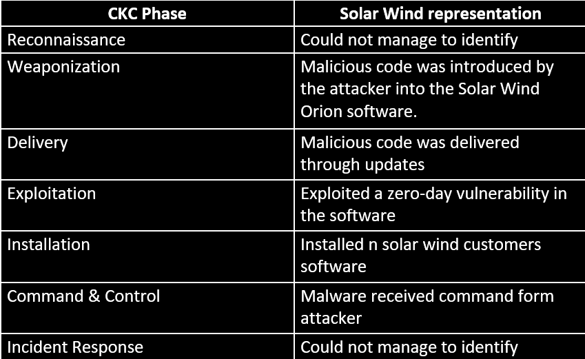
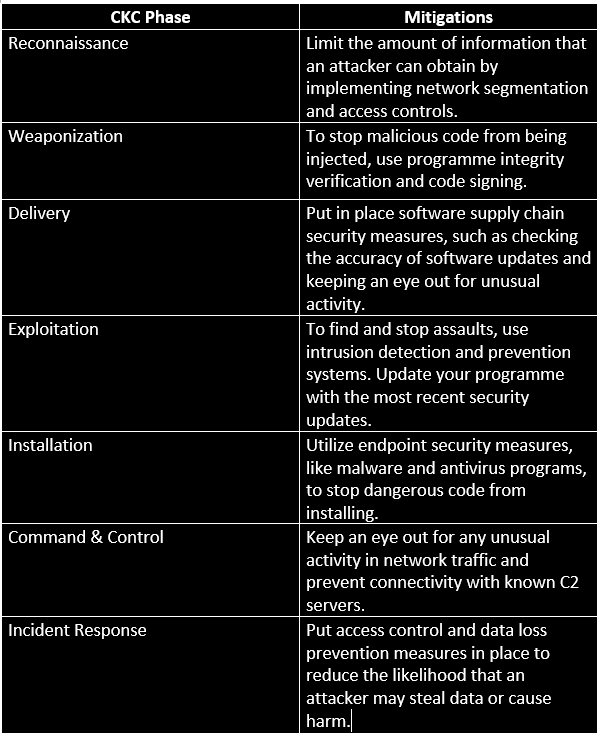

Cyber Kill Chain on
Solar Wind Incident
Cyber Kill Chain phases representation:

Mitigation Ways

Tools to utilise each phase
Reconnaissance: Intrusion detection systems(IDS). It can detect and alert on suspicious activity, such as scanning or probing of the network.Weaponization: Code signing and software integrity venfication tools. It can verify that software updates are authentic and have not been tampered with.
Delivery: Software composition analysis (SCA). It can help to identify and manage the risk associated with third-party software components.
Exploitation: Vulnerability scanning tools. It can identity and prioritize vulnerabilities in software and help to ensure that patches are applied in a timely manner.
Installation: Antivirus Software. It can detect and prevent the installation of malicious code on endpoints.
Command & Control: Network monitoring and threat intelligence tools. It can detect and alert on communication with known C2 servers and provide information about the attacker's tactics and techniques.
Action & Objectives: Data loss prevention (DLP). It can help to prevent unauthorized access to sensitive data and limit the attacker's ability to steal data or cause damage.
A complex assault that made use of several Cyber Kill Chain stages was proven effective by the SolarWinds exploit. Although certain stages, including reconnaissance, were not mentioned specifically in the paper, the attack emphasises how crucial it is to put security controls and technologies in place at every turn in the Cyber Kill Chain. Network segmentation, code signing, software supply chain security controls, vulnerability scanning, endpoint security controls, and suspicious activity monitoring are effective mitigations for every phase. Network monitoring tools, vulnerability scanning and patch management tools, endpoint security tools, and threat intelligence and monitoring tools are some of the technologies that could be utilised in each step.